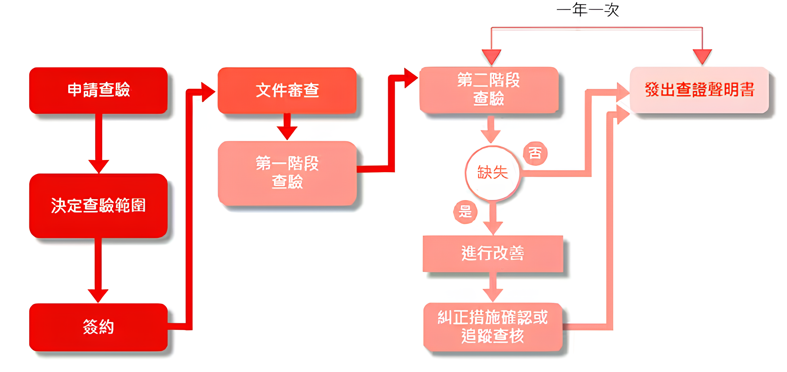

- 範圍界定：確定組織的邊界和適用的溫室氣體。
- GHG清單建立：提供準則來量化和報告組織的溫室氣體排放和移除。
- 監測和測量：建立系統來持續監測和測量GHG排放。
- 數據管理和質量：確保GHG數據的完整性和準確性，並進行審核和驗證。
- 報告和披露：制定詳盡的報告以披露GHG排放信息，提升透明度。
- 國際公認：ISO 14064-1是全球公認的環境管理標準，能提升組織的國際聲譽。
- 風險管理：通過系統性管理GHG排放，降低與氣候變化相關的風險。
- 提升競爭力：展示組織在環境保護方面的承諾，吸引對環境友好型企業有興趣的投資者和客戶。
- 法規遵循：協助組織滿足國內外有關溫室氣體排放的法規要求。
- 溫室氣體查證需要下列7個步驟： 
- 開始查驗流程，企業或組織提出查驗申請。
- 根據申請，確定需要查驗的範圍和具體內容。
- 企業與查驗機構簽訂查驗合約，正式開始查驗工作。
- 查驗機構對企業提交的相關文件進行審查，檢查文件的完整性和準確性。
- 初步現場查驗，評估企業的溫室氣體排放現狀，確認文件和實際情況的一致性。
- 深入查驗，針對第一階段查驗中發現的問題進行更詳細的檢查，確認是否存在缺失。
- 如果第二階段查驗中沒有缺失，則發出查證聲明書。如果有缺失，企業需進行改進，並在必要時進行追跡查核，確認改進措施的落實。
ISO 14064-1究竟是什麼?
ISO 14064-1是國際標準化組織（ISO）發布的環境管理標準，旨在提供溫室氣體(GHG)排放和移除的量化與報告指南。該標準適用於所有類型和規模的組織，幫助其制定和管理溫室氣體清單，以提高透明度和環境責任。